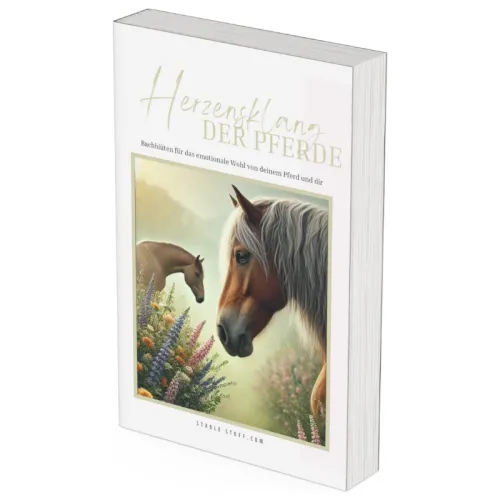
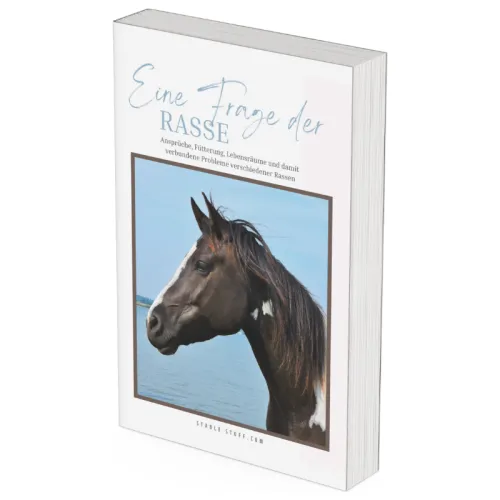
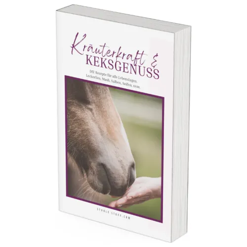

Herzensklang de Pferde - Bachblüten Therapie für Pferde
Produktprofil · Marktplatz-Daten 2026-10-13 · Verkaufsseiten-Recherche 2026-10-13 · Kategorien: Animals & Pets, Health & Fitness
- Herzensklang de Pferde - Bachblüten Therapie für Pferde ist ein/e E-Book in Animals & Pets und Health & Fitness, vertrieben über den Digistore24-Marktplatz von Anbieter stable-stuff, gelistet seit 2024-09-09.
- Listenpreis $51.20; Digistore24 meldet — Checkout-Konversion, — Stornierungsquote und 20 % Affiliate-Provision.
- Verdienst pro Verkauf (Affiliate): $10.24 (Anbieter-seitige Statistik, keine Prognose).
Interesse an Herzensklang de Pferde - Bachblüten Therapie für Pferde? Aktueller Preis, Boni und Garantiebedingungen finden Sie auf der offiziellen Seite des Anbieters:
Offizielle Verkaufsseite ansehen
Affiliate-Link (Werbung) — wir verdienen ggf. eine Provision, ohne Mehrkosten für Sie.

Marktplatz-Daten
| Produkttyp | E-Book |
|---|---|
| Preis | $51.20 (Single payment) |
| Affiliate-Provision | 20 % |
| Garantie/Rückgabe | Laut Verkaufsseite des Anbieters — vor dem Kauf auf der offiziellen Seite prüfen |
| Anbieter | stable-stuff (gelistet seit 2024-09-09) |
| Marktplatz-Statistiken* | Checkout-Konversion — · Stornoquote — · Verdienst/Verkauf $10.24 |
* Anbieter-seitige Statistiken von Digistore24; sie hängen von der Traffic-Qualität ab und sind keine Prognose.
Marktplatz-Beschreibung des Anbieters
<h2><strong>Bring dein Pferd wieder ins Gleichgewicht</strong></h2> <h4>Unterstütze dein Pferd durch mehr Ruhe und Vertrauen, Ängste abzubauen, mehr Mut zu entwickeln und Verhaltensauffälligkeiten zu meistern.</h4> <div> <p>Auf einfache und natürliche Weise mit Bachblüten für Pferde</p> <p> </p> <div> <h2>Mit Bachblüten bringst du die Pferdeseele auf natürliche Weise wieder in Harmonie und Gleichgewicht</h2> <p>Die Bachblütentherapie ist eine sanfte, natürliche und effektive Methode, die ganz easy in den Alltag integriert werden kann. Sie hilft Pferden dabei, Belastungen zu verarbeiten und Verhaltensprobleme in den Griff zu bekommen – so steht einem harmonischen Miteinander zwischen dir und deinem Pferd nichts mehr im Weg.</p> <p>Wir haben schon mega beeindruckende Erfolge mit dieser Therapie erlebt. Fälle, die anfangs aussichtslos wirkten, haben sich plötzlich positiv entwickelt, weil die Pferde gelernt haben, alte Wunden zu heilen und neue Situationen entspannter anzugehen.</p> <p>Sie blockierten sich nicht mehr selbst, konnten wieder sie selbst sein und hatten wieder Freude am Leben – und nicht nur sie, auch ihre Besitzer waren begeistert!</p> <p>Selbst bei extrem ängstlichen oder super dominanten Pferden haben die Bachblüten oft wahre Wunder gewirkt, und diese Tiere konnten endlich ein gelasseneres Leben führen.</p> <p><strong>Jetzt denkst du vielleicht: „Das bringt doch nichts!“</strong></p> <p>Doch, du wirst es aber erst wirklich verstehen, wenn du es selbst ausprobiert hast. Am Anfang ist jeder skeptisch, aber alle die es ausprobiert haben sind beigeistert davon! </p> <p>Wir möchten dir dieses Wissen weitergeben, damit du es bei deinem Pferd ausprobieren, und auch danach selbst überzeugt sagen kannst „Ja es bringt doch etwas!“ </p> <p>Du kannst damit nichts verlieren, nur gewinnen!</p> </div> <div> <div> <div> <div> <div> <div> <h4>Damit sich dein Pferd wieder wohlfühlen kann</h4> <p> </p> <div> <div> <div> <div> <div> <div> <div> <h4><strong>Ängste überwinden</strong></h4> </div> </div> <div> <div> <p>Dein Pferd erschreckt sich schnell und ohne Grund vor den kleinsten Dingen? An einen entspannten Ausritt ist schon lange nicht mehr zu denken!</p> <p>Bachblüten helfen Pferden auf sanfte Weise, dass dein Pferd sich beruhigen kann und entspannter wird. </p> <p>Für mehr innere Ruhe und Gelassenheit!</p> </div> </div> </div> </div> </div> </div> </div> <div> <div> <div> <div> <div> <div> <div> <div> <div> <div> <h4><strong>Schock verarbeiten</strong></h4> </div> </div> <div> <div> <p>Dein Pferd hat schon viel schlechtes erfahren? Oder hatte es einen Unfall oder eine schwere Krankheit?</p> <p>Bachblüten helfen Pferden solche Trauma schneller zu verarbeiten und darüber hinwegzukommen.</p> <p>Für mehr Freude am Leben und Blick nach vorne!</p> </div> </div> </div> </div> </div> </div> </div> </div> <div> <div> <div> </div> </div> </div> </div> </div> <div> <div> <div> <div> <div> </div> </div> </div> <div> <div> <div> <div> <div> <div> <div> <h4><strong>Mut und Selbstsicherheit bekommen</strong></h4> </div> </div> <div> <div> <p>Ein geringes Selbstvertrauen deines Pferdes macht ihm das Leben sehr schwer. In der Herde ist dein Pferd ein Außenseiter und wird von anderen ständig verjagt. </p> <p>Bachblüten können deinem Pferd den verlorenen Mut zurückgeben, damit es mehr an sich selbst glauben kann.</p> <p>Für mehr Selbstvertrauen und Mut!</p> </div> </div> </div> </div> </div> </div> </div> </div> </div> <div> <div> <div> <div> <div> <div> <div> <div> <div> <div> <div> <h4><strong>Aggressionen in den Griff bekommen</strong></h4> </div> </div> <div> <div> <p>Pferde sind Herdentiere, manchen gefällt das gar nicht und sie wollen einfach ihre Ruhe haben. Das zeigen sie deutlich durch angelegte Ohren, beißen oder treten. Und das nicht nur in der Herde, sondern auch bei dir!</p> <p>Bachblüten helfen deinem Pferd freundlicher und aufgeschlossener zu werden.</p> <p>Für mehr Harmonie und Zufriedenheit!</p> </div> </div> </div> </div> </div> </div> </div> </div> </div> <div> <div> <div> </div> </div> </div> </div> </div> <div> <div> <div> <div> <h1>Du möchtest deinem Pferd entspannt helfen? Dann sichere dir jetzt unser eBook "Herzensklang der Pferde"</h1> <p> </p> <div> <div> <div> <div>Bachblüten für das <strong>emotionale Wohl</strong> von dir und deinem Pferd</div> </div> </div> </div> <div> <div> <p>Entdecke die sanfte Kraft der Bachblüten für Pferde und wie sie deinem Pferd helfen können, emotionales Gleichgewicht und Wohlbefinden zu finden. Unser E-Book „Herzensklang für Pferde“ ist dein ultimativer Leitfaden, um die natürliche Heilkraft der Bachblüten optimal für dein Pferd zu nutzen.</p> <p><strong>Detaillierte Blütenporträts:</strong> Erfahre alles über die 38 Bachblüten und ihre spezifischen Einsatzmöglichkeiten. Ob Angst, Stress, Unruhe oder Aggressionen – finde die passende Blüte für jede Herausforderung.</p> <p><strong>Praxisnahe Anwendungstipps:</strong> Wie wendest du Bachblüten richtig an? Wir zeigen dir, wie du die Tropfen richtig dosierst und verabreichst, um die bestmögliche Wirkung zu erzielen.</p> <p><strong>Fallbeispiele und Empfehlungen:</strong> Erhalte wertvolle Tipps und bewährte Kombinationen für typische Herausforderungen im Pferdealltag, wie Turnierstress, Stallwechsel oder gesundheitliche Probleme.</p> <p>Verbindung der Bachblüten mit den Chakren und Meridianen: Welche Bachblüte ist die passende?</p> </div> </div> </div> </div> </div> </div> </div> </div> </div> </div> </div> </div> </div>
Von der Verkaufsseite des Anbieters
Seitentitel: Bachblüten für Pferde - das eBook für dich und dein Pferd
Meta-Beschreibung: Bachblüten für Pferde, hier erfährst du alles was du wissen musst. Unser eBook für alle Pferde mit Verhaltensproblemen! So wird alles wieder gut!
Hauptüberschrift
Du möchtest deinem Pferd entspannt helfen? Dann sichere dir jetzt unser eBook "Herzensklang der Pferde"
Abschnitts-Überschriften
- Bring dein Pferd wieder ins Gleichgewicht
- dass Verhaltensauffälligkeiten und körperliche Beschwerden oft Probleme des seelischen Gleichgewichts bei Pferden sind
- Mit Bachblüten bringst du die Pferdeseele auf natürliche Weise wieder in Harmonie und Gleichgewicht
- Stable Stuff
- Unternehmen
- Folge uns!
Einstiegstext
Wusstest du, dass Verhaltensauffälligkeiten und körperliche Beschwerden oft Probleme des seelischen Gleichgewichts bei Pferden sind Körper und Geist sind eng miteinander verbunden und beeinflussen sich ständig gegenseitig.
Das bedeutet, selbst wenn alles passt – von der Fütterung über die Haltung – kann es trotzdem zu Problemen kommen, wenn dein Pferd innerlich unausgeglichen ist.
Seelische Unausgeglichenheit ist für unsere Pferde (und auch für uns) sehr belastend. Ein harmonisches Miteinander ist dann oft kaum oder nur schwer zu erreichen.
Die Bachblütentherapie ist eine sanfte, natürliche und effektive Methode, die ganz easy in den Alltag integriert werden kann. Sie hilft Pferden dabei, Belastungen zu verarbeiten und Verhaltensprobleme in den Griff zu bekommen – so steht einem harmonischen Miteinander zwischen dir und deinem Pferd nichts mehr im Weg.
Recherche-Methode: rohes HTML · 927 Wörter · Qualität: rich · recherchiert am 2026-10-13. Vollständige Recherche-Datei (MD) ↗
Wie Produkte dieser Art geliefert werden
Allgemeiner Hinweis zu diesem Produkttyp (keine anbieterspezifische Anleitung): E-Books auf Digistore24 werden als digitaler Download geliefert (meist PDF/EPUB): direkt nach dem Checkout erhalten Sie einen Downloadlink oder Mitgliederzugang und können auf jedem Gerät lesen. Für die genaue Anwendung von Herzensklang de Pferde - Bachblüten Therapie für Pferde sind die offizielle Verkaufsseite und die enthaltenen Materialien maßgeblich.
Gut zu wissen
- Keine Garantie-Formulierung in unserer Recherche gefunden — bestätigen Sie das Rückgabefenster auf der offiziellen Seite, bevor Sie kaufen.
- Marktplatz-Zahlen (Preis, Provision, Konversion, Stornoquote) — Quelle: offizielle Digistore24-Marktplatz-API (Affiliate-Sicht), Stand 2026-10-13. Gegenprüfung: Marktplatz-Suche nach Produkt-ID 569319.
- Verkaufsseiten-Zitate — Quelle: https://stable-stuff.com/bachblueten-fuer-pferde-herzensklang-der-pferde/, abgerufen 2026-10-13 (Methode: rohes HTML). Verify: offizielle Seite öffnen.
- Garantie / Rückgabe — vom Anbieter festgelegt; vor dem Kauf auf der Verkaufsseite bestätigen.
- Nicht von uns geprüft: Produktqualität, Ergebnisse, Testimonials — kein Praxistest für dieses Listing durchgeführt.
Häufige Fragen zu Herzensklang de Pferde - Bachblüten Therapie für Pferde
Antworten aus dem Marktplatz-Snapshot (2026-10-13) und der Verkaufsseiten-Recherche (2026-10-13); Anbieteraussagen sind inline gekennzeichnet.
Was ist Herzensklang de Pferde - Bachblüten Therapie für Pferde?
Herzensklang de Pferde - Bachblüten Therapie für Pferde ist ein Angebot des Typs „E-Book" im Digistore24-Marktplatz, Anbieter: stable-stuff, gelistet seit 2024-09-09. Eingepflegt unter Tiere & Haustiere und Gesundheit & Fitness. Digistore24 wickelt Checkout, Lieferung und Rückgaben ab.
Wie viel kostet Herzensklang de Pferde - Bachblüten Therapie für Pferde?
Der Digistore24-Marktplatz listet es für $51.20 (single payment). Preise legt der Anbieter fest und können sich ändern — der Marktplatz-Eintrag oben zeigt den Schnappschuss; die offizielle Verkaufsseite zeigt den aktuellen Preis.
Gibt es eine Geld-zurück-Garantie für Herzensklang de Pferde - Bachblüten Therapie für Pferde?
Unsere Verkaufsseiten-Recherche hat keine explizite Garantie-Formulierung gefunden. Viele Digistore24-Produkte bieten 60 Tage Geld-zurück, aber das legt jeder Anbieter selbst fest — bestätigen Sie es auf der offiziellen Verkaufsseite, bevor Sie kaufen.
Ist Herzensklang de Pferde - Bachblüten Therapie für Pferde seriös?
Wir bewerten keine Seriosität — wir veröffentlichen überprüfbare Zahlen: Anbieter stable-stuff (gelistet seit 2024-09-09), Checkout-Konversion —, Stornoquote —, Affiliate-Verdienst/Verkauf $10.24 (alles Anbieter-seitige Marktplatz-Statistiken). Lesen Sie unsere 6-Punkte-Bewertungsmethode und entscheiden Sie anhand der Zahlen — oder diskutieren Sie Herzensklang de Pferde - Bachblüten Therapie für Pferde auf GitHub.
Wo kann ich Herzensklang de Pferde - Bachblüten Therapie für Pferde sicher kaufen?
Nur über die offizielle Verkaufsseite, die auf dieser Seite verlinkt ist (Checkout und Rückgaben laufen über Digistore24). Prüfen Sie dort Preis und Garantie vor der Bestellung. Der Link ist ein Affiliate-Link — der Kauf unterstützt diese Website ohne Mehrkosten für Sie.
Wie erhalte ich Herzensklang de Pferde - Bachblüten Therapie für Pferde nach der Zahlung?
Der Checkout läuft über Digistore24: Nach der Zahlung erhalten Sie Ihren Zugang oder Download per E-Mail und in Ihrem Digistore24-Kundenkonto. Lieferdetails für diesen Produkttyp: E-Books auf Digistore24 werden als digitaler Download geliefert (meist PDF/EPUB): direkt nach dem Checkout erhalten Sie einen Downloadlink oder Mitgliederzugang und können auf jedem Gerät lesen. Bei Problemen kann der Digistore24-Käufersupport Ihre Bestellung wiederherstellen.
Alle 50 Käuferfragen zu Tiere & Haustiere — das komplette Kategorie-FAQ.
Herzensklang de Pferde - Bachblüten Therapie für Pferde auf Reddit diskutieren
In Community-Threads vergleichen echte Käufer Erfahrungen. Wir verlinken Communities, keine einzelnen Posts — Threads verschwinden, Subreddits bleiben:
- r/FITNESS — deutschsprachige Community mit Diskussionen zu animals & pets.
- Reddit-Suche nach „Herzensklang de Pferde - Bachblüten Therapie für Pferde" — Live-Ergebnisse, von uns nicht beeinflusst.
- Top-„Erfahrungs"-Treffer dieses Jahr — selbst nach Aktualität filtern.
Passendes auf Amazon.de
Physische Produkte und Zubehör, die häufig zusammen mit Herzensklang de Pferde - Bachblüten Therapie für Pferde gekauft werden:
- Nahrungsergänzung auf Amazon.de — Top-Ergebnisse, Amazon-Ranking.
- Bestseller: Nahrungsergänzung — live Liste von Amazon, von uns nicht kuratiert.
Werbung: Als Amazon-Partner verdient DigistorePicks DE an qualifizierten Käufen (Partner-tag adminstorede-21). Amazon setzt eigene Preise und Provisionen (niedrige einstellige Prozente — weit unter den 30–75% der Digistore24-Anbieter). Amazon ist ein Convenience-Angebot für Sachprodukte, kein Ersatz für das digitale Produkt oben.
Ähnliche Angebote in Tiere & Haustiere

<div> <div> <div> <p><strong>BAUCH, BEINE, PO – das Trainingsprogramm für dein Freizeitpferd</strong></p> </div>

<h2>Zertifizierter Katzenverhaltensberater / Katzencoach – Fernlehrgang der aCATemy®</h2> <p>Bewirb eine professionelle Online-Ausbildung für

<p>Diese Schulung ist hilft Haltern von Herdenschutzhunde in Familienhand, ein glückliches und harmonischen Zusammenleben zu ermöglichen.</p> <p&

<p><strong>So wird aus Lesen echte Hilfe vor Ort!</strong></p> <p><strong>Im Guide erfahren Sie:</strong></p> &l
Weitere Angebote von stable-stuff

<div> <h2>Eine Frage der Rasse</h2> </div> <div> <div> <div> <div><strong>Nährstoffversorgung und Gesundhe

<div> <h2>Kräuterkraft und Keksgenuss</h2> </div> <div> <div> <div> <div><strong>Gesunde DIY Pflegeprodukt

<h2><strong>Verwöhne dein Pferd mit DIY Produkten</strong></h2> <h4>Grundrezepte, mit denen du bei Erkrankungen schnell etwas zur
Herzensklang de Pferde - Bachblüten Therapie für Pferde ist auch gelistet in
Gesundheit & Fitness (577 Produkte)
Ähnliche Preislage in Tiere & Haustiere

<p>Dieser Kurs richtet sich an Hundehalter, deren Hund an der Leine aggressiv reagiert, bellt oder ausrastet - ein Problem mit sehr hoher emotionaler Bela

<h1>Basis-Webinar: Grundlagen in der Hundeerziehung</h1> <p>Wenn Du nur möchtest, dass Dein Hund kommt, wenn Du ihn rufst, hört sich das zwar

<p>Lange habe ich auf dieses Webinar gewartet. Wenn die Welpenbesitzer zu mir in die Hundeschule kommen, kennt man sich noch nicht so gut und dann gute Vi

<p>Die 100 wichtigsten Vitalstoffe für Hunde – Dein Schlüssel zu einem gesunden und glücklichen Hund! </p> <p><strong>Beschreibung:</
Ähnliche Suchanfragen
Wo Sie es sich ansehen können
Wo Sie es sich ansehen können
Aktuelle Preise, Garantie und Boni finden Sie auf der offiziellen Verkaufsseite:
Offizielle Verkaufsseite ansehen
Das ist ein Affiliate-Link (Werbung) — kaufen Sie darüber, verdienen wir ggf. eine Provision, ohne Mehrkosten für Sie.
Quellen & weiterführende Informationen
- Offizielle Verkaufsseite (aktueller Preis, Garantie, Boni): stable-stuff.com/bachblueten-fuer-pferde-herzensklang-der-pf (Affiliate-Link)
- Öffentliche Digistore24-Produktseite: digistore24.com/product/569319
- Vollständige Recherche-Datei (Markdown, versioniert): content/products/49375-herzensklang-de-pferde-bachbl-ten-therapie-f-r-pferde.md
- Marktplatz-Kategorie: Tiere & Haustiere
Wie wir Produkte wie Herzensklang de Pferde - Bachblüten Therapie für Pferde bewerten
Sechs Prüfungen, ausschließlich mit offiziellen Marktplatz-Zahlen. Die vollständige Bewertungsmethode lesen · unsere Recherche-Standards & Kennzeichnung.
Fragen oder eigene Erfahrungen mit Herzensklang de Pferde - Bachblüten Therapie für Pferde?
Praxis-Tests veröffentlichen wir erst, nachdem wir ein Produkt selbst gekauft haben — aber Ihre Erfahrung hilft anderen Lesern: Diskussion zu Herzensklang de Pferde - Bachblüten Therapie für Pferde auf GitHub starten/verfolgen. Falsche Zahl gefunden? Korrektur melden — jede Seite zeigt ihre Datenstände, Korrekturen gelten für die ganze Website.